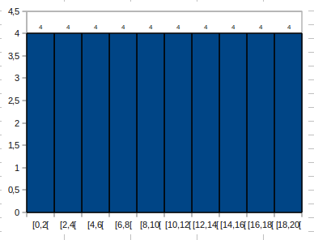
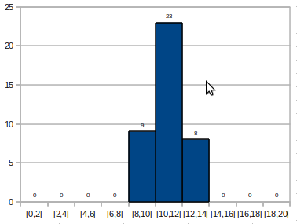
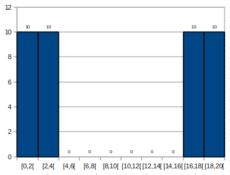
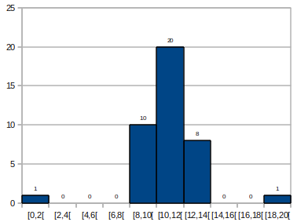
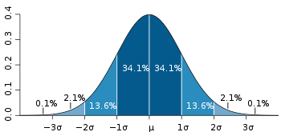

| Choisissez votre langue ! | Choose your language ! |
Par exemple, si la moyenne générale d'une classe d'élève en mathématiques est 10, s'agit-il d'une classe moyenne ?
Voici 3 histogrammes correspondant à des profils distincts de classes pour lesquelles la moyenne générale est exactement 10/20 :
For example, if the overall average mark of a class of students in mathematics is 10, is it an average class?
Here are 3 histograms corresponding to distinct profiles of classes for which the general average is exactly 10/20:



Dans le troisième cas il y a un groupe d'élèves extrêmement faible et un groupe d'élève extrêmement fort. Les mauvais résultats des uns sont compensés par les performances des autres, ce qui explique une moyenne générale de 10, mais cette classe est tout sauf 'moyenne'.
Enfin pour le second cas (diagramme du milieu) les notes se concentrent autour de la moyenne. Il semble bien que dans ce cas précis on ait affaire à un groupe vraiment moyen.
Nous nous fixons pour but ici de définir des critères quantitatifs précis nous permettant de dire si une population est homogène ou non du point de vue d'un caractère particulier.
Nous pourrons donc mesurer l'homogénéité ou son contraire l'hétérogénéité.
Étendue
La première mesure qui peut venir à l'esprit est de mesurer la différence entre les extrêmes.In the third case there is an extremely weak group of students and an extremely strong group of students. The poor results of some are compensated by the performance of others, which explains an overall average of 10, but this class is anything but 'average'.
Finally for the second case (diagram in the middle) the scores are concentrated around the average. It seems that in this specific case we are dealing with a really average group.
We aim here to define precise quantitative criteria allowing us to say whether a population is homogeneous or not from the point of view of a particular character.
We can therefore measure homogeneity or its opposite, heterogeneity.
Range
The first measurement that may come to mind is to measure the difference between extremes .Mais peut-on dire réciproquement que si l'amplitude est élevée le groupe n'est pas homogène ?
Considérons cet histogramme :
But can we reciprocally say that if the amplitude is high the group is not homogeneous?
Consider this histogram:

Si l'on excepte l'unique élève ayant obtenu un résultat brillant et celui ayant obtenu des résultats catastophiques, le reste du groupe est homogène.
Ainsi si l'étendue est une bonne mesure de l'homogénéité lorsqu'elle est faible, elle n'est pas significative lorsqu'elle est élevée.
Il nous faut donc d'autres instruments de mesure pour affiner notre diagnostic.
Écart absolu moyen
La première idée qui peut venir est de constituer à partir de la série S=(x0, x1, ... ,xn-1) la série des écarts yi=xi-μ (0 ≤ i ≤ n-1) où μ est la moyenne de la série.Cependant, si nous faisons la moyenne de ces écarts elle sera toujours nulle les écarts positifs étant compensés exactement par les écarts négatifs.
Il existe une première façon de remédier à cet état de chose, c'est de considérer les valeurs absolues de ces écarts. C'est ainsi qu'on définit l'écart absolu moyen.
If we except the only student who obtained a brilliant result and the one who obtained catastrophic results, the rest of the group is homogeneous.
So while the spread is a good measure of homogeneity when it is low, it is not meaningful when it is high.
We therefore need other measuring instruments to refine our diagnosis.
Absolute mean deviation
The first idea that can come is to constitute from the series S=(x0, x1, ... ,xn-1) the series of deviations yi=xi-μ (0 ≤ i ≤ n-1) where μ is the mean of the series.However, if we take the average of these deviations, it will always be zero, the positive deviations being exactly compensated by the negative deviations.
There is a first way to remedy this state of affairs, and that is to consider the absolute values of these deviations. This is how the absolute mean deviation is defined.
\( \displaystyle e = \frac{\sum\limits_{i = 0}^{n - 1}{\mid x_{i} - \mu \mid}}{n} \)
\( \displaystyle e = \frac{\sum\limits_{i = 0}^{n - 1}{\mid x_{i} - \mu \mid}}{n} \)
Variance
Au lieu de prendre la valeur absolue des écarts on peut tout aussi bien élever ces écarts au carré et faire la moyenne des résultats, c'est précisément ce qu'on appelle la variance de la série statistique.Variance
Instead of taking the absolute value of the deviations, we can just as well square these deviations and average the results, this is precisely what is called the variance of the statistical series.\( \displaystyle v = \frac{\sum\limits_{i = 0}^{n - 1}\left( x_{i} - \mu \right)^{2}}{n} \)
\( \displaystyle v = \frac{\sum\limits_{i = 0}^{n - 1}\left( x_{i} - \mu \right)^{2}}{n} \)
\( \displaystyle v = \frac{\sum\limits_{i = 0}^{n - 1}{x_{i}}^{2}}{n} - \mu^{2} \)
soit encore pour un caractère X :\( \displaystyle v(X) = \overline{X^{2}} - \left( \overline{X} \right)^{2} \)
La variance est donc la différence entre la moyenne des carrés et le carré de la moyenne.\( \displaystyle v = \frac{\sum\limits_{i = 0}^{n - 1}{x_{i}}^{2}}{n} - \mu^{2} \)
or again for a quantitative variable X:\( \displaystyle v(X) = \overline{X^{2}} - \left( \overline{X} \right)^{2} \)
The variance is therefore the difference between the mean of the squares and the square of the mean.Voyons ce que deviennent ces formules dans le cas d'une série triée et regroupée avec les effectifs des modalités S=((xi,ei))0≤i≤p-1.
Un calcul rapide nous donne :
Let's see what becomes of these formulas in the case of a sorted and grouped series with the numbers of the modalities S=((xi,ei))0&le ;i≤p-1.
A quick calculation gives us:
\( \displaystyle v = {\sum\limits_{i = 0}^{p - 1}f_{i}\left( x_{i} - \mu \right)^{2}} = {\sum\limits_{i = 0}^{p - 1}f_{i}{x_{i}}^{2}} - \mu^{2} \)
où chaque fi=ei/n est la fréquence de xi.\( \displaystyle v = {\sum\limits_{i = 0}^{p - 1}f_{i}\left( x_{i} - \mu \right)^{2}} = {\sum\limits_{i = 0}^{p - 1}f_{i}{x_{i}}^{2}} - \mu^{2} \)
where each fi=ei/n is the frequency of the value xi.Écart-type
De par la mise au carré des écarts, l'unité de la variance est le carré de celle du caractère (si le caractère est en kg, sa moyenne est en kg mais sa variance est en kg2) d'où l'impossibilité d'additionner la moyenne et la variance.Standard deviation
By squaring the deviations, the unit of the variance is the square of that of the variable (if the variable is in kg, its mean is in kg but its variance is in kg2) hence the impossibility of adding the mean and the variance.Par exemple, lorsque le caractère statistique a une distribution particulière assez courante dite 'normale gaussienne' (nous verrons en probabilités de quoi il s'agit), grossièrement en forme de cloche, l'écart type prend tout son sens.
- Dans l'intervalle [μ-σ,μ+σ], on trouve 68% de la population.
- Dans l'intervalle [μ-2σ,μ+2σ], on trouve 95% de la population.
- Dans l'intervalle [μ-3σ,μ+3σ], on trouve 99,7% de la population.
For example, when the variable has a rather common particular distribution called 'Gaussian normal' (we will see in probabilities what it is), roughly in the shape of a bell, the standard deviation takes on its full meaning.
- In the interval [μ-σ,μ+σ], we find 68% of the population.
- In the interval [μ-2σ,μ+2σ], we find 95% of the population.
- In the interval [μ-3σ,μ+3σ], we find 99.7% of the population.

Propriétés
Les propriétés suivantes se vérifient immédiatement sur la définition.Properties
The following properties hold immediately on the definition.L'écart type n'est pas modifié si on ajoute ou retranche une même constante à tous les termes de la série statistique.
Si yi = xi + C alors σy = σx.
The standard deviation is not modified if a same constant is added or subtracted from all the terms of the statistical series.
If yi = xi + C then σy = σx.
Si on multiplie une série par une constante positive, l'écart type est multiplié par la même constante.
Si yi = Kxi alors σy = Kσx.
If you multiply a series by a positive constant, the standard deviation is multiplied by the same constant.
If yi = Kxi then σy = Kσx.
Ecart-type relatif
Un écart-type fort ne révèle une grande hétérogénéité que pour des valeurs moyennes faibles du caractère.Pour une mesure relative de l'hétérogénéité (ou de son contraire) on introduit donc, quand la moyenne n'est pas nulle, l'écart-type relatif :
Relative standard deviation
A high standard deviation only reveals great heterogeneity for low mean values of the variable.For a relative measure of heterogeneity (or its opposite) we therefore introduce, when the mean is not zero, the relative standard deviation:
Le coin de Python
Voici un programme qui génère une série statistique et qui calcule le maximum, le minimum et l'étendue de la série :Python's Corner
Here is a program that generates a statistical series and calculates the maximum, minimum and range of the series:
Le coin de Julia
Et voici l'équivalent avec Julia 1.6 :
Julia's corner
And here is the equivalent with Julia 1.6:
|
Création Gilles Dubois - licence CC-BY-SA
Created by Gilles Dubois - licence CC-BY-SA
|
Septembre 2023
September 2023
|
Version mobile Jquery
Mobile Jquery version
|
|